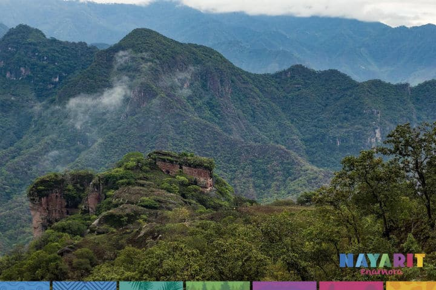
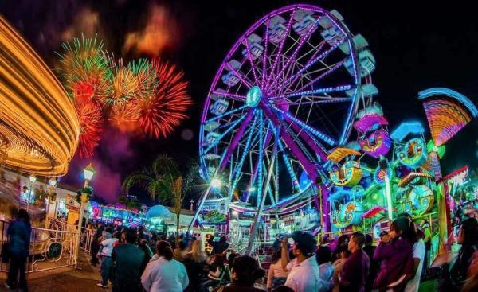
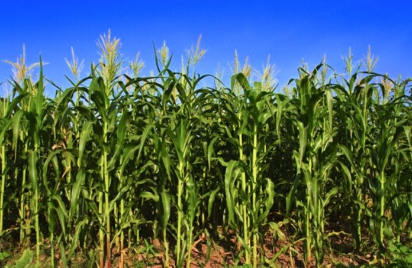

Del Nayar es un municipio localizado en la region norte del estado de Nayarit, Mexico. Limita al norte con el estado de Zacatecas y al sur con los municipios de Tepic y Xalisco.
Las festividades mas importantes en Del Nayar incluyen la fiesta en honor a San Sebastian, celebrada el 20 de enero, y la fiesta en honor a la Virgen de Guadalupe, que se festeja el 12 de diciembre con procesiones y danzas tradicionales.
Del Nayar es un municipio que se dedica principalmente a la agricultura. Destaca en la producci n de ma z, frijol, hortalizas, as como la ganader a y la pesca en las reas cercanas a los r os.
